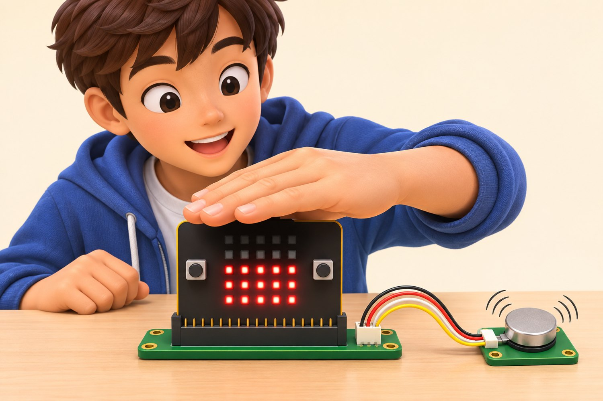
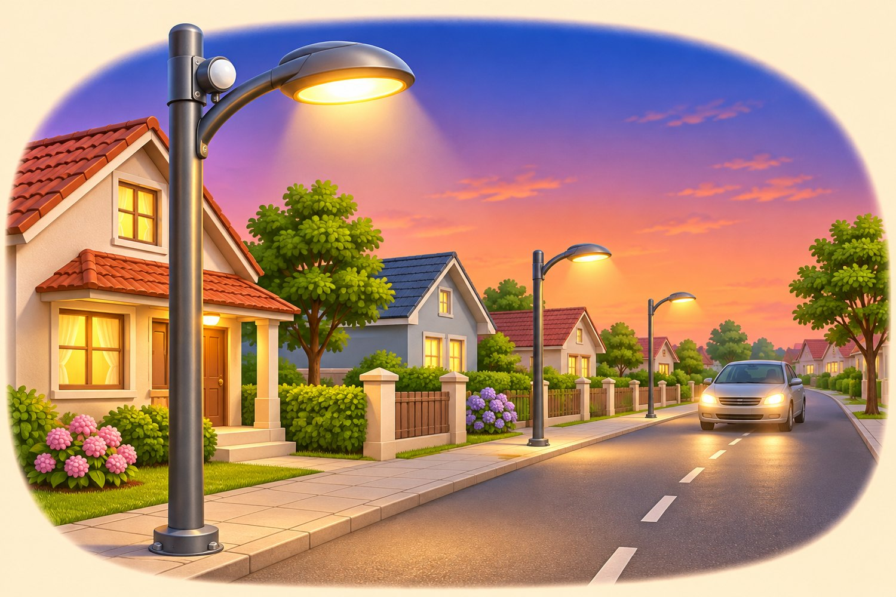
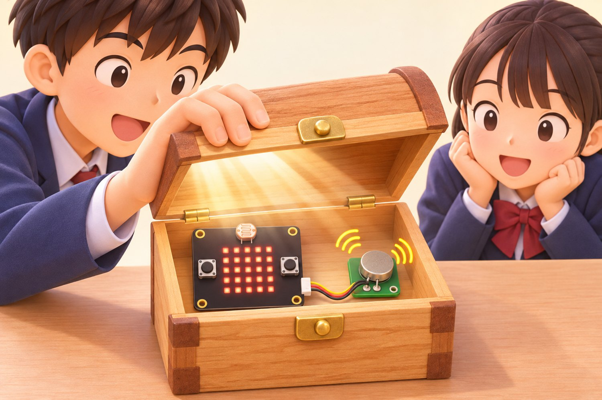

技術・家庭科〔技術分野〕3年
光センサではかって、
暗くなったら自動でブルブル

① micro:bit の光センサで、明るさを数値ではかれる
② しきい値を決めて、「もし〜なら」で
振動モータを自動で動かせる
③ 処理の流れをフローチャートで表せる
🔘 ボタンAを押したら
→ 振動モータがブルブル
🎚 アプリのフェーダーで
→ 3色LEDの色を変えた
決めていたのは 人
👀 センサが明るさをはかり
🧠 micro:bitが判断して
💪 振動モータを動かす
だれも押さなくても 自動で 動く

💡 街灯
暗くなると点き、朝に消える
🚗 車のオートライト
トンネルに入ると点く
📱 スマホの画面
周りに合わせて明るさが変わる
どれも 明るさをはかる
センサが入っている
表の 5×5のLED表示の
一部が光センサをかねている
LEDは光を受けると、ごくわずかな
電流が流れる性質がある。
これを使って明るさをはかる
はかるときは表側に光を当てる・手で表をおおう
裏側をおおっても値はほとんど変わらない
明るさは少しずつ変わる量
→ micro:bit が 0〜255 の
数値に変えて読みとる
「デジタルで出力する」は
0 か 1 の 2通りだけ
→ モータは OFF か ON
256段階の値を 2通りの動きにつなぐのが コンピュータの判断（プログラム）
MakeCode（makecode.microbit.org）で組む
📂「数を表示」は 基本、
「明るさ」は 入力 の中
振動モータは P3-P0 につないだまま
ブロックを組んでダウンロード
表示された数字を読む
流れる数字は、1回最後まで見る
💡 書きこんだ直後は 0 が出ることがある。
2回目からの数字を使おう
| はかる場所・ようす | 明るさ |
|---|---|
| ☀️ 机の上（そのまま） | ？ |
| ✋ 手で表をおおう | ？ |
| 📚 教科書を上にかぶせる | ？ |
| 🪟 窓ぎわ・電灯の下 | ？ |
ノートに4つの数字を書く
おおったまま、次の数字を読む
気づいたこと
・暗いほど数字が小さい
・同じ机でも班ごとに少しちがう
教室の明るさは日によって変わる
→ 数字は自分ではかって決める
数字は一例。自分の班ではかった値で決める
しきい値＝ ON と OFF を
切りかえる境目の値
例：おおった3 と 机の55 の間 → 20
🤔 しきい値を 50 にすると？
→ 雲が出て少し暗くなっただけで
ブルブル。近すぎると誤作動しやすい
▭ 処理：やること
◇ 判断：はい／いいえで分かれる
プログラムの3つの形
順次：上から順に 分岐：条件で分かれる
反復：くり返す
✏️ ノートに書こう
「明るくなったら動く」なら、
ひし形の中はどう変わる？
📂 どこにある？
ずっと：基本
もし〜なら〜でなければ：論理
（「もし〜なら」の ⊕ でも足せる）
0 < 0（くらべる）：論理
明るさ：入力
デジタルで出力する：
高度なブロック → 入出力端子
20 は例。自分のしきい値に変える
「数を表示」は外す（理由は次の次で）
🤔 しきい値20のとき、明るさ19・20・21ではそれぞれ ON？ OFF？
予想してから、スライダーで確かめよう
😵 ずっとブルブルしっぱなし → しきい値が大きすぎる
明るいときの値より大きいと、いつでも「はい」になる
😶 おおっても動かない → しきい値が小さすぎる／端子が P0 になっているか
ケーブルが P3-P0 に差さっているかも見る
🐢 反応がおそい → 同じ「ずっと」の中に「数を表示」が残っている
数字が流れ終わるまで、次の判断に進まない
🔁 < と > が逆 → 明るいときにブルブルする
「暗い」＝ 値が小さい ＝ 明るさ < しきい値

光をはかるのは、表のLED表示の部分
⭐ ふたを開けたら知らせる箱
筆箱や箱に入れ、明るくなったらブルブル
ヒント：くらべる記号を > に。しきい値も考え直す
⭐⭐ ブッ・ブッと知らせる
暗いあいだ、ON・OFFをくり返す
ヒント：一時停止（ミリ秒）を使う
⭐⭐⭐ 2段階で知らせる
少し暗い → 画面にアイコン
とても暗い → ブルブル
ヒント：しきい値を2つ使う
手をゆっくり近づけると、
明るさが 19・21・19・22… と
しきい値20のまわりでゆれる
→ モータが ON・OFF をくり返す
街灯がこうなったら、こまるよね？
考えの例
ONにする境目とOFFにする境目を
分ける
例：15より暗くなったら ON
30より明るくなったら OFF
その間は、いまの状態のまま
🔌 USBを先に抜いてから
ケーブルを外す
✋ ケーブルはコネクタをつまんで抜く
線を引っぱると中で切れる
💾 プログラムは名前をつけて保存
次回、続きから使う
📦 部品を数を確かめて袋にもどす
明るさをはかる
（0〜255）
しきい値とくらべて
判断する（分岐）
ON（1）か
OFF（0）
センサの値で判断させると、人が操作しなくても動く。
しきい値は実際にはかって決める
🔭 次回から：明るさ以外のセンサ（人感・土の水分・温度など）も使って、
身近な困りごとを解決する装置を考える
① きょうできたことを
◎・〇・△でふりかえる
② 明るさで動く装置を考える
だれが・いつ・どう助かる？
例
部活の帰り、外が暗くなったら
ブルブルで知らせる
→ 練習に夢中で
時間を忘れがちな部員が
早めに帰れる